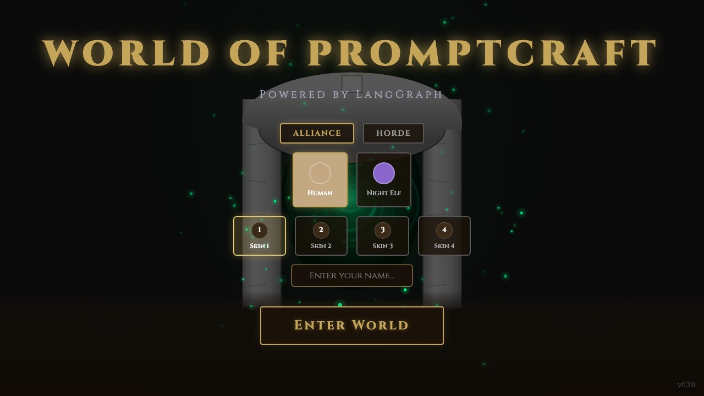
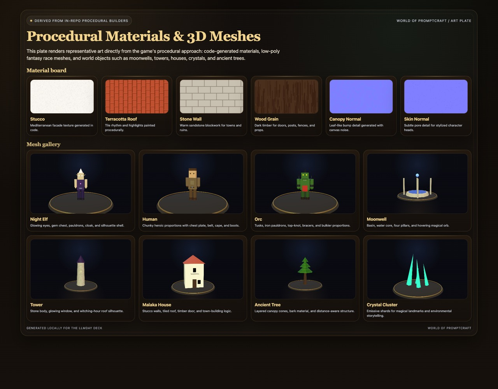

A fantasy multiplayer world where the game loop, world state, and LangGraph-driven NPCs all reinforce one another.

The experience starts with MMO-style identity: faction, race, appearance, and character fantasy.
The player traverses zones, settlements, dungeons, interfaces, and atmosphere systems built on the 3D client.
Core play comes from interacting with NPCs, progressing quests, handling combat, and shaping the world.
This is a world-based game loop: identity creates roleplay, exploration creates context, and interaction creates the need for believable agents.
“This world makes sense because the fiction, the mechanics, and the agent model all ask for the same thing: persistent characters inside a shared realm.”

The world is described as structured zones instead of one hardcoded map, which makes it extensible.
Terrain, atmosphere, movement, collision, dungeons, combat UI, quests, and world builder tools all live in the client.
The server handles connections, nearby broadcasts, cleanup, and authoritative state mutation.
The agent system injects personality, context, memory, and tools into each non-player character.
The client makes the world feel alive, the server makes it consistent, and the agent layer makes the NPCs feel intentional.
Fast routing handles simple or out-of-band turns before expensive reasoning.
The model sees persona, goal, player state, world context, recent chat, and lore.
Tool calls emit pending actions instead of mutating the world directly.
The NPC updates internal state so the next encounter feels continuous.
This is what turns a model call into a believable world character rather than a stateless answer box.
The NPC can remember gifts, grudges, promises, and its own next intention.
Tools write to a pending-action sink, then the server applies them through authoritative state.
It is a strong state-of-the-art direction because it combines memory, tools, server authority, and a coherent 3D world instead of treating AI as a detached conversation surface.
where AI is one of the native systems